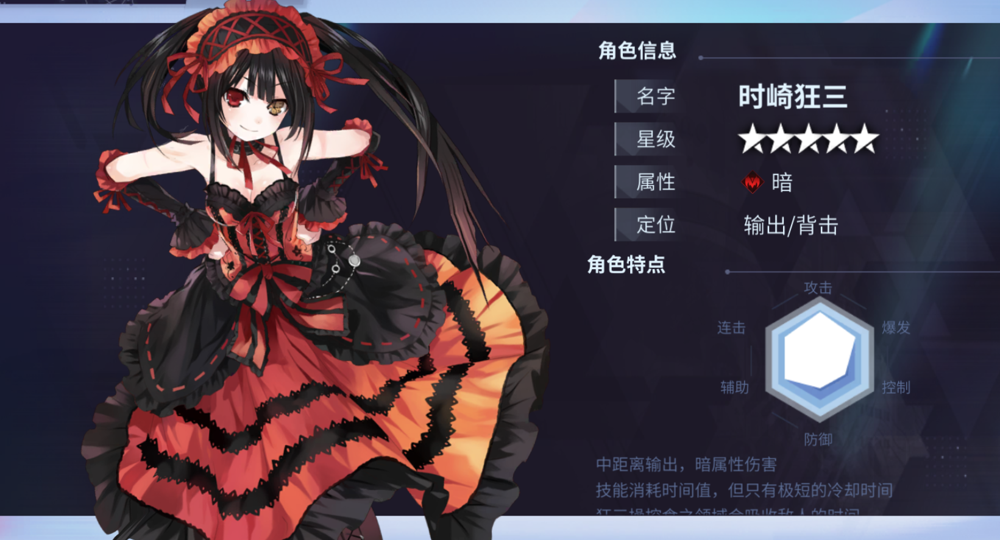
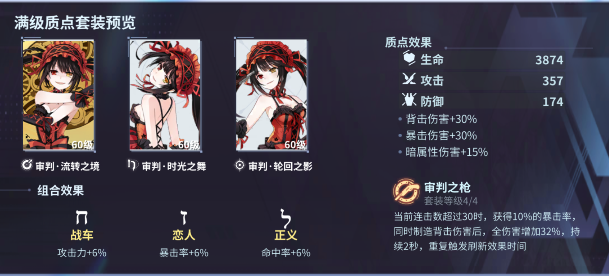
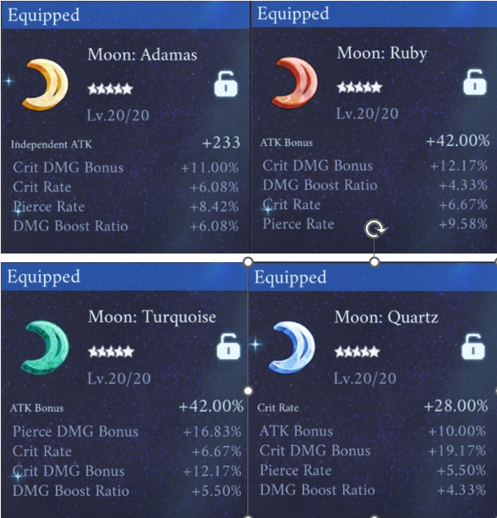
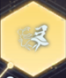
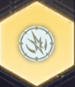
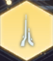
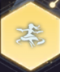
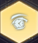

Kurumi
Contributor: Mai Nguyễn a.k.a Tokisaki Rinkai
1. Sơ lược

- Nguồn sát thương chính: dmg sau lưng (back hit)
- Chỉ số chính: chí mạng (crit)
- Tầm hoạt động: melee, AoE
- Độ cơ động: cao
- Khả năng phòng thủ: cao
- Khả năng gây sát thương: trung bình
- Loại năng lượng: Time, tự động hồi 3 Time mỗi giây, mỗi đòn đánh thường có 30% hồi thêm 1 Time
2. Bộ vết thánh (Sephira): Binder 
Hiệu ứng riêng từng mảnh:o Circulation Realm: dmg back hit +30%
o Dance of Time: crit dmg +30%
o Shadow Reincarnation: dark dmg +15%
Hiệu ứng khi trang bị đủ bộ:
Khi combo đạt trên 30, nhận thêm 10% crit rate. Khi gây dmg vừa crit vừa back hit, dmg của Kurumi tăng lần lượt 17%/21%/26%/32% (tùy level set) trong vòng 2s, hiệu ứng được kích hoạt liên tục.
Chỉ số: 357 atk, 174 def, 3874 máu
Đồng thời, 3 mảnh sephira sẽ giúp tạo 3 đường liên kết kabbalah, giúp đem lại 3 chỉ số cộng thêm.
o Block rate 6%
o Crit rate 6%
o Atk 6%
3. Stat và rune
Kurumi vẫn là char thiên crit, và luôn luôn thiếu dmg trầm trọng. Nên ưu tiên những stat crit rate, crit dmg, % atk bonus, pierce rate, pierce dmg, atk cộng thẳng (theo thứ tự ưu tiên). Do Kurumi đã có khả năng sống sót khá tốt, và cũng không có gì scale theo HP hay Def (trừ heal theo %HP tối đa ở skill 2) nên việc lắp đồ tank cho ẻm là không cần thiếtRune cho Kurumi có thể lắp 4 Moon, hoặc mix với 2 Moon 2 Leo/Cancer
Ví dụ dưới đây là ảnh build Kurumi của mình, các bạn hãy để ý tên dòng thôi chứ đừng để ý số, và đây cũng chỉ là lối build theo sở thích của mình

4. Crystal
Multipled Suffering: Khi tấn công kẻ địch dưới 30% máu, Kurumi nhận thêm 7,5% crit rate, 15% crit dmg
 Control the Area: Triệu hồi clone mỗi 15s, tối đa 5 clone. Mỗi khi mất 10% máu, số lượng clone có thể triệu hồi bị giảm đi 1, đồng thời Kurumi nhận 30% DMG MIT trong vòng 1s, hồi chiêu hiệu ứng 5s
 Dealy Pursuit: Mỗi khi Kurumi gây dmg, nhận 1 stack “Combo Mark”. Khi số stack “Combo Mark” đạt 40, những đòn đánh trong vòng 5s tiếp theo sẽ gây thêm 15% dmg chuẩn. Sau đó hiệu ứng sẽ reset. Lần số stack “Combo Mark” đạt 40 tiếp theo, những đòn đánh trong vòng 5s tiếp theo sẽ gây thêm 30% dmg chuẩn
 Spot the Pain: Khi có trên 50% máu tối đa, Kurumi nhận thêm 20% dmg skill và 8% hit rate
 Rapid Victory: Mỗi khi Kurumi gây dmg, có 5% khả năng triệu hồi thêm 1 clone tấn công địch. Clone sẽ tấn công 10 lần trong vòng 10s, mỗi lần gây dmg bằng 30% atk của Kurumi
 Life Return: Khi Kurumi nhận dmg kết liễu, cô sẽ tự trì hoãn cái chết thêm 5s. Trong khoảng thời gian này, cô nhận thêm 100% tốc độ cast skill, 50% dmg, dùng skill không còn tốn mana, hồi chiêu của tất cả các skill được reset
Skill và combo
Dưới đây là bộ skill của Kurumi, ở đây mình chỉ dịch một số hiệu ứng quan trọng và những chỉ số và hiệu ứng này chỉ tồn tại đủ khi bạn upgrade hết nhánh skill tương ứng. Làm gì có chuyện không tốn lông mà vẫn có chỉ số và hiệu ứng như hàng end game đúng không nào- Spinning Slide: Kurumi lướt về phía trước và xoay súng thành hình tròn, hất tung những kẻ địch trong tầm xoay, tấn công 3 / 7 / 16 lần gây dark dmg bằng 75% / 335% / 600% atk trong vòng 0,1s / 0,5s / 3s. Khi kĩ năng kích hoạt, Kurumi có thể di chuyển tự do, đồng thời nhận miễn khống chế và 15% DMG MIT cho đến khi kĩ năng kết thúc, đồng thời mỗi giây kẻ địch trúng chiêu sẽ nhận thêm một lượng dark dmg bằng với 20% atk của chúng, hiệu ứng kéo dài trong vòng 6s
- Sky Barrage: Kurumi triệu hồi kết giới Thời thực chi thành. Kết giới sẽ gây 80% / 80% * 138% dark dmg mỗi giây, giảm kháng Dark của địch đi 2% mỗi lần trúng chiêu (stack tối đa 5 lần), hồi cho Kurumi 5% máu tối đa mỗi 2s, cho Kurumi 8% atk và cho cả team thêm +8% Dark dmg. Nếu sử dụng Shooting Gallery khi kết giới Thời thực chi thành còn hiệu lực, Shooting Gallery sẽ được +12% dmg
- Shooting Gallery: Kurumi dịch chuyển tới kẻ địch trước mặt gần nhất, tấn công 5 / 8 / 10 / 11 lần, gây dark dmg bằng 50% / 415% / 595% / 745% atk, giảm 15% khả năng hồi phục của địch và hoàn trả 50% Time đã tiêu hao nếu combo hiện tại đạt ≥ 30. Cuối kĩ năng, triệu hồi Zafkiel nổ 1 lần, gây dark dmg bằng 754% atk lên toàn bộ kẻ địch trong tầm.
- Zafkiel’s Handle: Kurumi tấn công bằng súng liên tục 3 / 4 / 5 lần, lần lượt gây dark dmg bằng 45% / 45% / 50% / 25% + 30% (2 hit) / 75% atk, hit thứ 5 luôn luôn crit, mỗi hit có 30% hồi cho Kurumi 1 Time. Ngoài ra, kĩ năng nãy sẽ làm giảm def của kẻ địch đi 2% với mỗi hit, hiệu ứng này kéo dài 5s, có thể stack tối đa 5 lần
Combo cơ bản: tạm gọi theo thứ tự là skill 1 – skill 2 – skill 3 – Auto attack
- AA – Skill 2 – AA – Skill 1 – AA * 5 – Skill 3 – AA *3 – Skill 3 – AA …
- AA * 5 – Skill 2 – AA - Skill 3 – AA – Skill 3 - …
- AA – Skill 2 – AA – Skill 1 – AA – Skill 1 – AA – Skill 1 …
Một số thông tin để bạn có thể combo Kurumi được mượt hơn:
- Luôn bật Sky Barrage ngay khi có thể nếu còn Time và không gặp nguy hiểm, cố gắng dùng Sky Barrage trước các skill khác để nhận được rấtttt nhiều buff từ Thời thực chi thành
- Spam Shooting Gallery có lượng dps cao hơn và dồn dmg nhanh hơn Spinning Slide rất nhiều về cuối game, tuy nhiên đầu game khi chỉ số của Kurumi của bạn còn thấp thì Spinning Slide lại có lượng dmg nhỉnh hơn, nên nếu bạn đã có chỉ số khá khẩm thì nên spam Shooting Gallery, còn nếu còn yếu hoặc tay chơi còn yếu thì nên chơi lối Spinning Slide
Guide đến đây là hết rồi UwU Chúc các bạn luôn chơi game vui vẻ và cùng mình simp bé Mì đáng yêu này nhé :3
~ Contributor: Mai Nguyễn a.k.a Tokisaki Rinkai ~